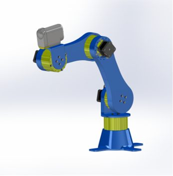
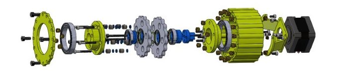

Cycloidal Robotic Arm
Project Overview
A bespoke four degrees of freedom robotic arm designed for smooth, repeatable camera motion. Each joint: wrist, elbow, shoulder, and the trunk are driven by NEMA 17 stepper motors through compact cycloidal drives, enabling high torque and precise motion control with near zero-backlash.


Cycloidal Drive Design & Implementation
I generated the disc profile using Me Virtuoso’s online cycloidal simulator. The finalized drives employ a dual cycloidal disc configuration positioned 180 degrees out of phase to compensate for unbalanced forces and to ensure smoother operation speed. The final drive assembly uses a combination of ball bearings, bronze bushings, and heat-set inserts for structural rigidity.

Outcomes
This project significantly deepened my expertise in designing, applying, and optimizing speed reduction systems, mechanical tolerance management, and motion transmission efficiency.